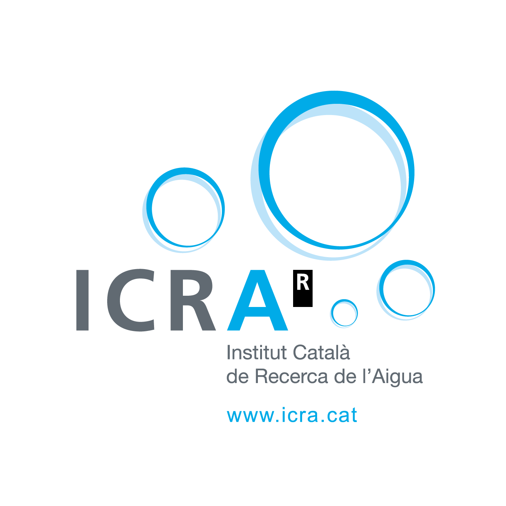
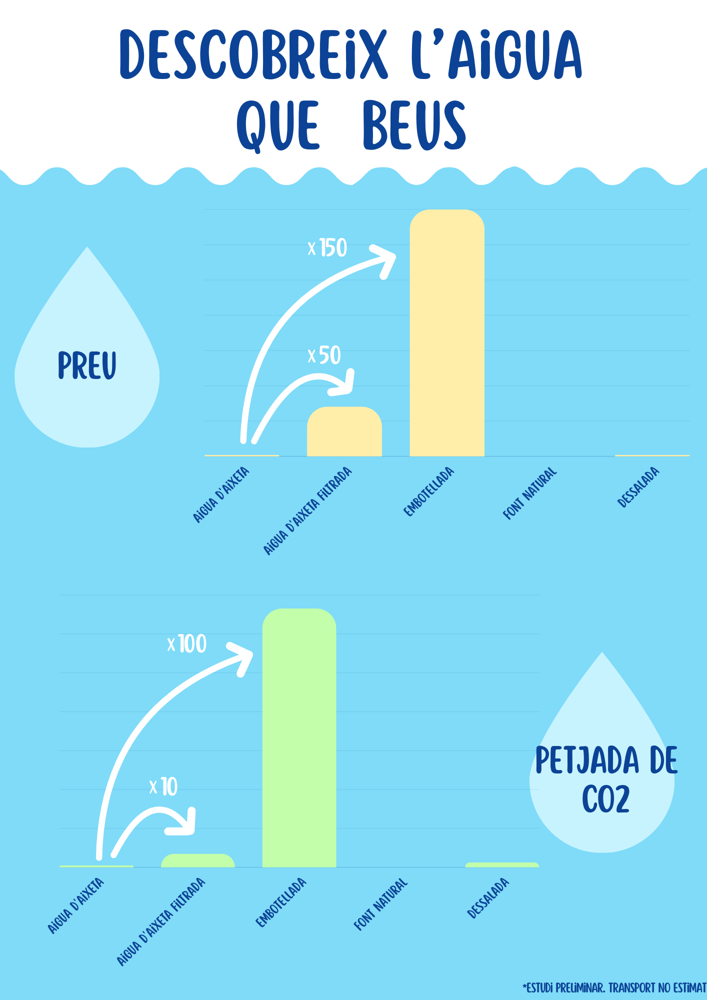

| {{i+1}} | |
| {{a}} |
| Nº | Resposta correcta | La teva resposta |
|---|---|---|
| {{i+1}} | {{resposta[i]}} | {{opcions[i] ?? '-'}} |
| {{resposta[en[0]]}} |
|
|
{{px}}% ({{en[1]}} persones)
|

| nº | creat |
Aigua {{n}} [{{resposta[n-1]}}] |
opció preferida | aigua que beu normalment | canviaràs hàbit consum? | admin |
|---|---|---|---|---|---|---|
| {{i+1}} | {{res.created}} | {{rr}} | {{resposta[res.json.opcio_preferida]}} | {{res.json.aigua_que_beu_normalment}} | {{res.json.canviaras_algun_habit_de_consum?"Sí":"No"}} |
| nº | Aigua | Encerts | %respecte {{resultats.length}} persones |
|---|---|---|---|
| {{i+1}} | {{aigua}} | {{ resultats.filter(r=>r.json.respostes[i]==aigua).length }} | {{ (resultats.filter(r=>r.json.respostes[i]==aigua).length/resultats.length*100).toFixed(2) }}% |
| nº | Aigua | Persones que la prefereixen | % respecte {{resultats.length}} persones |
|---|---|---|---|
| {{i+1}} | {{aigua}} | {{ resultats.filter(r=>r.json.opcio_preferida==i).length }} | {{ (resultats.filter(r=>r.json.opcio_preferida==i).length/resultats.length*100).toFixed(2) }}% |
| nº | Aigua | Persones | % | Persones que encerten la mateixa aigua que beuen | % |
|---|---|---|---|---|---|
| {{i+1}} | {{aigua}} | {{ resultats.filter(r=>r.json.aigua_que_beu_normalment==aigua).length }} | {{ (resultats.filter(r=>r.json.aigua_que_beu_normalment==aigua).length/resultats.length*100).toFixed(2) }} | {{ resultats.filter(r=>r.json.aigua_que_beu_normalment==aigua && r.json.respostes[i]==aigua).length }} | {{ (resultats.filter(r=>r.json.aigua_que_beu_normalment==aigua && r.json.respostes[i]==aigua).length/resultats.length*100).toFixed(2) }} |
| Canviarà | Persones | %respecte {{resultats.length}} persones |
|---|---|---|
| {{val?"Sí":"No"}} | {{resultats.filter(r=>r.json.canviaras_algun_habit_de_consum===val).length}} | {{ (resultats.filter(r=>r.json.canviaras_algun_habit_de_consum===val).length/resultats.length*100).toFixed(2) }}% |
